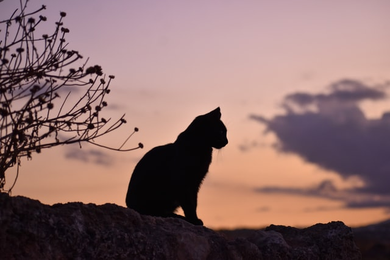

This Website is awesome
This website has some subtext that goes here under the main title. It's smaller font and the color is lower contrast.

Random Cat info
Some cats have patterned fur

Some cats are sleepy

Some cats are adventurous
Some cats are just babies
“Owners of dogs will have noticed that, if you provide them with food and water and shelter and affection, they will think you are God. Whereas owners of cats are compelled to realize that, if you provide them with food and water and affection, they draw the conclusion that they are God.”
- Christopher Hitchens
What's better than reading about these cats!
Sign up for our newsletter by checking that button right over there!